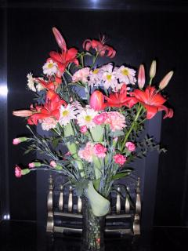

Wednesday, March 20, 2002Another Hull weekend
We were in Hull again this weekend, and managed to make lots of progress. On Saturday, we visited lots of Hotels, both for us to stay in for our wedding night, and also for extra guest accommodation (our reception venue only has 16 rooms). We also went and discussed flowers at the Florist near to the reception venue, and planned out what we were going to need. We're going to go back and visit her again later in the year when she said she'd make up a sample bouquet for me, a sample buttonhole for Rich and also show us examples of the flowers she's thinking of using.
On Sunday, we went to church and filled in the forms, so we now have a piece of paper which has the details on it, including when the Banns will be read. We now need to go and see the church in Brighton to get the Banns read there as well but having the form from St Nicholas should make that process simpler.
It was just a shame that the Rail network conspired against us yesterday, and that our journey back was a bit harder going that it should have been. Firstly, Hull Trains didn't have any services running (due to engineering works at Grantham) so we had to take a train to Doncaster, and then take another train to London. That wasn't so bad, and in fact the train to Doncaster was running early so we managed to get onto an earlier London train than we expected. We arrived at Kings Cross, and walked to the Thameslink station only to discover that there was no through service, and we could only join the service at London Bridge. Bah! We decided to go to Victoria instead and ended up standing around on Victoria station for an hour waiting for a train, and then when it did arrive it took us 1.5 hours to get to Brighton. Double Bah! Still, we arrived home eventually but were pretty exhausted by the whole experience.
Posted by Jane at 2:06 PM
Oops, just remember something I was supposed to post on here about 2 weeks ago, but blogger was misbehaving and I've only just remembered again. The day that Steff and I found my dress (10th March), she bought me a book "The Language of Brides" which is full of lots of lovely quotes and poems.
Posted by Jane at 9:50 PM
Friday, March 15, 2002Yesterday we confirmed a coach to come and pick our guests up from various hotels in the Market Weighton area, and take them to the church for the ceremony. It will then take them to the reception venue.
Slowly, but surely, things are starting to come together.
Posted by Jane at 12:22 PM
Sunday, March 10, 2002As a pre-wedding treat, I'm going to have a "Pamper Day" at the Brighton Grand's leisure facilities in early May. I'm going with 2 of the girls I worked with at Aspect-Proteus. One of them I've known for quite a while, but the other used to work for Proteus and so we only worked together for about 2 months before I was made redundant. However, strange things happen and I bumped into her on the Hitched Discussion Forum shortly after I started visiting the site, and we've been exchanging emails ever since.
As well as access to the facilities for the day (swimming pool, gym, sauna etc), we get a light lunch, and then we're all having a Body Polish treatment (Full body exfoliation and massage with body lotion (1 hr) Excellent to soften and brighten your skin) - sounds lovely and I'm already looking forward to it.
Posted by Jane at 10:57 AM
Friday, March 08, 2002Successful weekend
Well what a successful weekend that was... On Friday, we booked our photographer after doing a bit of maths (trying to work out what the price difference was between the 2 on our shortlist). Then yesterday, Steff and I went dress shopping. We went to two shops, "Blessings" and "Bride and Joy" - both of them in Brighton.
Blessings had a good selection of dresses, but unfortunately they didn't seem to want to be as helpful as the lady at "The Ozone" was last weekend. They seemed to moan at us if we tried to help ourselves, yet weren't really helpful either. Never the less, I tried on some lovely dresses, and almost bought one. Almost but not quite.
Bride and Joy is run out of a ladies house, she didn't have as large a selection of dresses as some of the others but I did have her undivided attention. She was full of suggestions, and I found her to be really helpful and she (and Steff) persuaded me to try on a different style which turned out to be the dress.
So that's that sorted, after only trying on dresses in 4 shops (I popped into Debenhams on Thursday evening and tried on a couple of their dresses). My "dress buddies" (Susie and Steff) were really great, and they were both really supportive. So, thanks girls.
Posted by Jane at 6:52 PM
Thursday, March 07, 2002I put some photos of our reception venue up yesterday. The hotel confirmed that the cheque had been received and everything was now in place for our wedding. How very exciting. Rich's family booked their rooms for our wedding night yesterday as well.
Tomorrow, Steff, Simes and Daisy are coming down to Brighton and Steff and I are going dress shopping. We've got 2 shops lined up, both in Brighton and both of whom I saw at last weeks Wedding Fair at the Brighton Centre.
Planning a wedding is very strange, I alternate between being really excited, and feeling really hassled by the sheer amount of things we have yet to sort out. We are making really good progress so far tho.
Posted by Jane at 3:59 PM
Sunday, March 03, 2002
Posted by Jane at 10:40 PM
We had these wonderful flowers delivered last Saturday, from Japan... Thanks Marisa.
Bah. So many wedding related magazines and very few have anything to say about what the groom is supposed to wear. For example, one magazine we looked at today had a massive two page special on groomwear; another had a five page feature but it turned out to be just about gadgets.
Still, there's relatively little I can do on the clothes front until Jane has made a decision on The Dress. I mean, Jane will have to give me some guidance in order to find something that's sympathetic to her dress. Until then, it's just a matter of gathering intelligence on where to buy from...
The wedding fair (see Jane's blog today) did have a few grooms on the catwalk, but that part of it was too cheesy to take seriously. At least we're now armed with more brochures.
Posted by Richard at 9:18 PM
Wedding weekend
Well, it turned into quite a busy weekend for us one way or another, some of it wedding related, some of it not. I went dress shopping with Susie on Saturday afternoon, and had a great time. We went to The Ozone in Church Street, Brighton and spent about an hour and a half trying on lots of different styles to see how they all suited. It was really interesting and enjoyable and the assistant who was looking after me did a great job.
This morning we headed off to the Wedding Fair which was being held in the Brighton Centre. We hadn't really expected to find much of use - given the distance between Brighton and Hull - but it turned out to be a really good use of time. Not only did I find some more Bridal dress shops, but also we made some appointments to meet up with some photographers - they're all prepared to travel around the country (for a price of course). We also managed to pick up some more brochures with ideas for Groom attire, and a really useful magazine from Sussex Life packed full of adverts for different wedding related items and services.
Posted by Jane at 8:13 PM